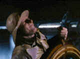

|
Secret Life of Walter
Mitty/B+,B+
|
HBO/1947/110m/FS 1.33 |
A lovely ode to the pulp magazines that
served as fodder for male fantasies, The Secret Life of Walter Mitty is a perfect
vehicle for the talented farceur Danny Kaye. The episodic nature of Mitty's fantasies are
sprinkled atop a hot fudge sundae cloak and dagger plot. Let's describe the delectable
dessert before the ice cream melts.
 Six digressive
delights have Mitty captaining a storm tossed ship at sea, a doctor performing miraculous
surgery, an RAF pilot shooting down Nazis, as Mississippi gambler Gaylord Mitty, as
Anatole of Paris, the fey designer of haute couture, and finally as western gunslinger
"Mitty the Kid." Two of the fantasies contain songs written especially for Kaye
for his witty wife Sylvia Fine. This is Kaye doing what he does best, performing songs
matched merrily to talents by his life-long collaborator Fine. The patter song in the RAF
sequence serves up the sillier side of Kaye, while the Anatole of Paris production number
is the highlight of the film. It's a great opportunity for Goldwyn to march out his famous
leggy "Goldwyn Girls" in the charming fashion show.
Kaye is great fun in The Secret Life of Walter Mitty. The
supporting cast is excellent, anchored by former "Goldwyn Girl" Virginia Mayo
doing what she does best, showing off the glorious virtues of Technicolor. Fay Bainter is
very funny as Walter's domineering mother and even Boris Karloff gets to add to the
laughs.
Mitty makes a delightful DVD from HBO's Goldwyn Collection. Like
most of the films from Sam Goldwyn's studio, the original elements have been treated with
kid gloves. The colors on the Technicolor transfer print of the 1948 movie are rich
and beautiful. The transfer is sharp and bright and there was little or no overt damage to
the print. The pressing adds no unwanted artifacts. The mono sound is enjoyable with no
hiss or other disturbing deterioration. |
|
The
Feature
Archive has
articles ranging from John
Ford to Screen
Voices, The
Heistmasters, Akira
Kurosawa and Frank
Darabont.

Catch the Hollywood take on Blonde Bimbos by
clicking on the image above.
Check out the Movie
Poster Archive
for short bios and images of Susan Hayward, Kirk
Douglas, Katharine Hepburn and many more. This
month's featured star is Clark
Gable.
|
|
Imaging
Science Foundation
The
Imaging Science Foundation promotes proper standards
in home theater viewing. ISF trained technicians
offer monitor calibration services to consumers. The
difference in a properly calibrated monitor
can be astounding. Click on the image to find an ISF
member near you. |
|
HOT
LINKS
DVD
Verdict
They
may be judgmental, but that's the point, isn't it.
Lots of DVD reviews plus news and more
The
Home Theater Forum
Looking
for lively and helpful exchanges on home theater,
DVD, movies. Visit this friendly site and get a
hardy welcome. |
|
Home
Theater Reference Reviewing System
When you read a DVD review it's of utmost importance to
know what equipment is being used to evaluate quality.
Click on the projectors to find out more. |
|
|